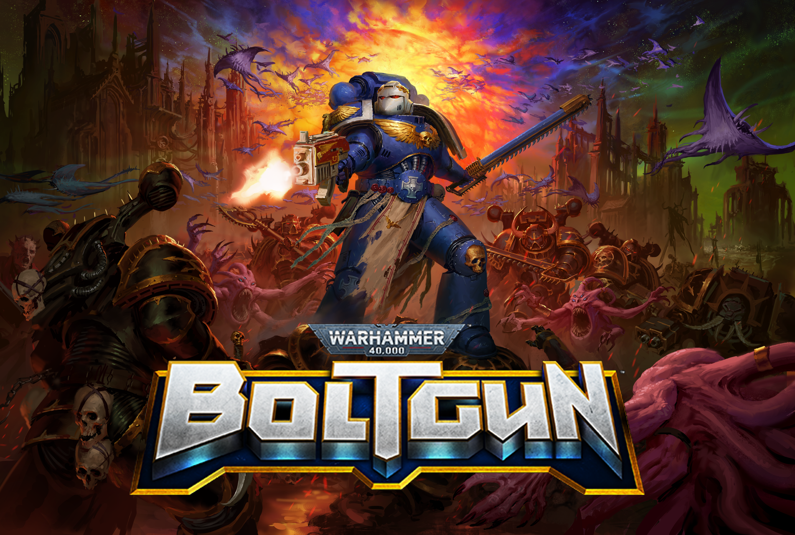

Warhammer 40,000: Boltgun
Boltgun is a retro first person shooter set in the Warhammer 40k universe created by Auroch Digital, published by Focus Entertainment.
I worked on Boltgun from production through to full release and post release support. I worked as a generalist programmer helping build up many of the core systems used in boltgun.
- Working alongside design to creating adjust weapons which fit the exaggerated nature of the 40K universe
- Programming FSM based AI enemy characters including the infighting system, arena system and NPC abilities
- Created the control algorithm for Flying AI
- Responsible for all of the UI programming including integrating gamepad support into our title